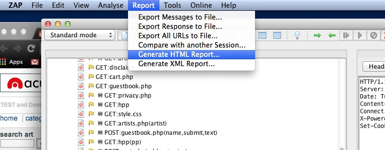

Introduction
OWASP ZAP is a penetration testing tool for people who aren't penetration testing experts. You can very easily scan a site and get a list of Alerts about possible security exploits and generate reports about parts of the site that don't follow OWASP best practices. There are more intensive tools that can also be used to try to hack into the site.
Installation and setup
To install OWASP ZAP you just need to download it here and run through the installation process. There isn't a ton of setup that needs to be done to use the quick start button talked about in the next section, but there are a few things that can be done to scan the site in different ways.
Changing settings to work with MAMP on MAC
If you’re on a mac using MAMP you’ll likely need to go into this file (File/mutillidae/classes/MySQLHandler.php) and change password to ‘root’ using a test editor.
Configuring Firefox Proxy Settings
You don't need to do this to use Quick Scan, but if you'd like to populate the Site Tree with individual pages you can do so by using the Plug-N-Hack button in OWASP ZAP. You can also do this by going into Firefox Preferences, by Selecting the Advanced tab, selecting the Network Sub-Tab, pressing the Setting Button, clicking on the "Manual proxy configuration" button and pointing the HTTP Proxy at "localhost" and the Port at "8080" (Zap's default). You should also click on the "Use this proxy server for all protocols" button and make sure "localhost" is not included in the "No Proxy for" part of this menu. Once this is done you can populate individual pages or explore the site manually (which is recommended by security experts) by simply navigating through the site manually in Firefox.
Quick Start
These scans miss content that can't be accessed unless you're logged in until you setup Auto-Authentication. It should be noted that Quick Start uses the Spider tool and the Active Scan (which actively attacks the site) so you should only use it on approved sites. The scans can be triggered again by right clicking on the site in the sites tree, then selecting the corresponding option from the attack menu. The Alerts from this or any attack can be exported as seen below.
Generating a HTML Report
Useful buttons
Setting up Auto-Authentication
- Find the login in the Sites Menu (open sites folder in left window) and right click on it, (it may look something like this: “POST:login.jsp(password,username” or “POST:index.php(page)(login-php-submit-button,password,username)”) right click and flag in context of Login Request. This should fill in the Login POST data and the login in URL.
- Then go to a page in the site tree and use find to find the text that appears while you're logged in (This text will usually be something like "Logout". Once you've found this highlight the text and right click it to flag it as a Logged In Indicator.
- Logout and copy the the URL from your browser and insert it into the "Logout URL"
- You're Authentication Properties should look something like this:
- Hit the auto Authenticate button
- Go to the site in the browser and logout if necessary
- Click on any link while logged out, if it logs back in automatically it means auto-authentication has been setup correctly. (As of 12/16/2013, isn't capable of using cookies for login)
Form Fuzzing
There's a bunch of different Fuzzers available. Here are the basic steps for form fuzzing.
For a better explanation of how to use Form Fuzzing watch this video. It should be noted that the "Successful" state just means the test completed. The Reflected site means the text inserted is present in the sites Response, but you will want to look at where the text is reflected in the Response tab because a lot of it is false positives.
Integration with other tools
There is a way you can hook up some CI servers to run selenium, firefox, and Zap automatically when you deploy. It can then run the site automatically and alert you if new security issues appear on a new deploy. I will look further into this if this tool proves valuable.
Early Results
I think our code monkeys are doing a good job, because I haven't been able to get high alerts against one of our recent sites yet. The tools was able to detect vulnerabilities on an old site we designed that came back because of said vulnerabilities. This is a scan 40% done on the intentionally vulnerable site OWASP Mutillidae. It gives you an idea of what can be found by the program.